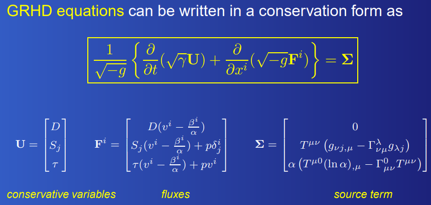
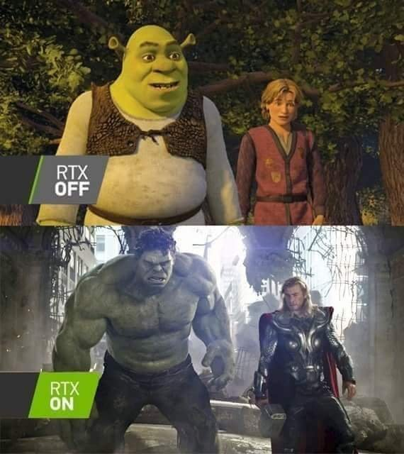
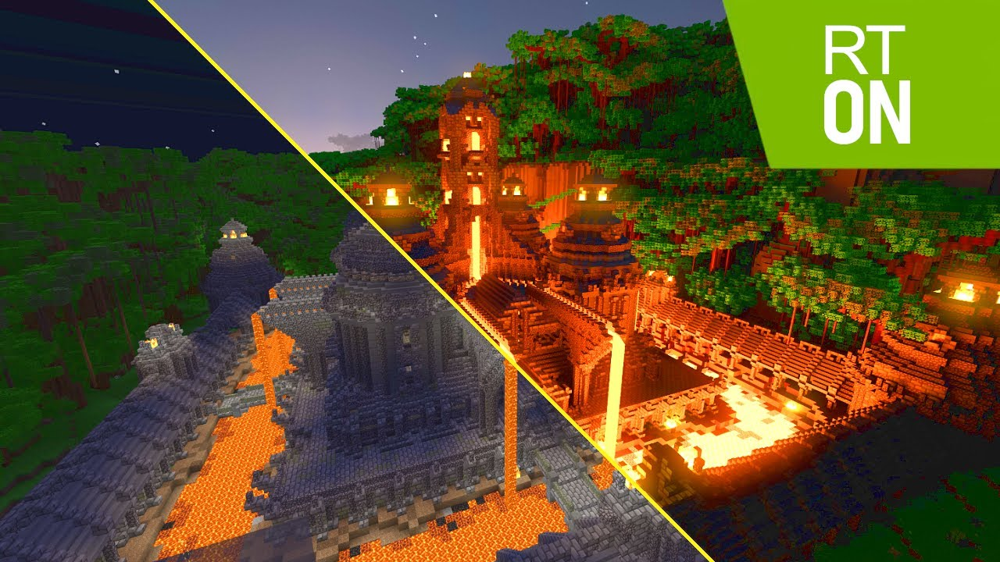
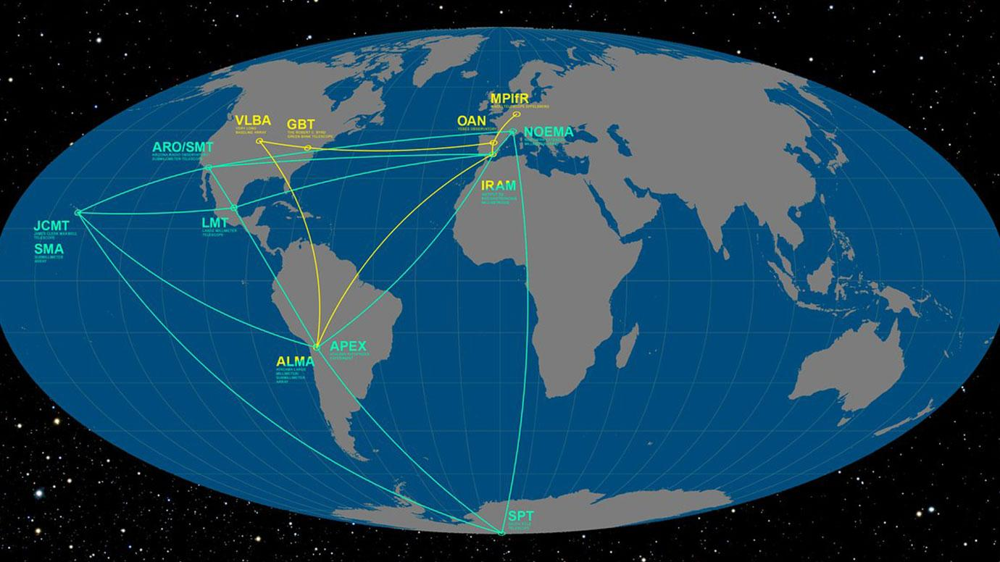

Black holes
How a physics engine, a few equation and a whole lot of computational power predicted the future

A visualisation of a black hole generated by NASA's Goddard Space Flight Center/Jeremy Schnittman
Before the age of modern computing, the concept of a black hole existed entirely under complex mathematical formulas and obtuse definitions. The inherent difficulty in defining what a black hole is made it so that only physicians could even attempt to imagine its physical apperance. However, with the advances of computing technology, both in terms of computational power and memory, as well as how much easier it is for people to get in and work within this field, people no longer needed to rely on (pesky) physicians to describe to them what a black hole truly looks like. As such, millions of people around the globe finally get a preview as to what a black hole could possibly look like under our models of physics.
The process of creating such simulations

A flurry of possible images of Sagittarius A* created by the EHT Collaboration
As you may have guessed, creating these simulations takes a lot of resources. In the case of the library of black holes seen above, an estimated number of 80 millions CPU hour of processing time was necessary for their simulation of 5 million images. To put that into perspective, it is equivalant to running 2000 laptops running full time for an entire year. However, with the help of a supercomputer, these images only took and the actual simulations only took two months fully render. Of course, this amount of computational power would be useless it had something to actually compute. What was to be computed were general relativistic magnetohydrodynamic (GRMHD) equations which are ever changing due to the constant feedback loop between its variables.
A glimps at what a GRMHD equation looks like in one of its possible forms
Alongside computers, a team of physicians who knew about computer science needed to be there in order to actually convert these incredibly mind-boggling equations into algorithms. Some made algorithms to compute GRMHD equations, but there also was the need of converting the data from these equations into images. As such, more calculations, called general relativistic ray tracing, needed to be done, and so more algorithms needed to be created. Now, where have we head the term ray tracing before?
Ray tracing
A meme of shrek with and without RTX on
Ray tracing is a very trendy and new technology which most graphics card designers have started to implement as a feature in their products. An example of this is Nvidia's RTX, abbreviated for ray tracing texcel eXtreme, which is being used to showcase the limits of game graphics. With RTX, even games such as Minecraft can turn from having a cartoon-ish look to almost mimicking real life.
Ray tracing works by simulating virtual light particles coming from a given light source. These light particles will then reflect and refract differently depending on the material, and the intensity will vary based on how luminous the light source is (the larger the light source, the more particles will be present and the greater processing power will be needed). Simulating one particle of light is might be a simple task, but when scaling this task up to millions of particles and given the time constraint (in an interactive game, these particles will have to be simulated each frame), the amount processing power necessary will be massive. Before the age of modern computing, such a feat would have been left to supercomputers to compute, but now given the massive leap in computing power and storage, alongside smart algorithms, a normal home laptop can, given a good enough graphics card, render these scenes.
A real side-to-side image of minecraft with (right) and without (left) RTX on
In games, where only a few variables needs to be considered, this task is reasonable to be ran on a personal albeit strong computer, but when dealing with general relativistic ray tracing, a modern day (2022) supercomputer will be needed to simulate these light particles as things such as curvature of space time, magnetic fields, attributes of a relativistic particles,... needs to be included in the calculations
Nostradamus ex machina

The first image of a black hole (Sagittarius A*) captured by the Event Horizon Telescope
The blurry blob in the image above is, believe it or not, a picturized black hole. The process of making this image itself took a colossal amount of data processing, and collaborative work between more than 300 scientists. An extrememly important milestone in physics, but relatively boring for ordinary people living out their day to day life. However, what is most interesting here is how close to the simulation the picture actually looks, given the fact that humans have never witnessed a black hole before, beside from equations and definitions (from the view point of an ordinary person).
An image of telescopes around the globe needed to get a picture of Sagittarius A*
The simulations itself might be very close to mimicking the behaviour of a blackhole, but it is far from perfect. As such, astrophysicians are feeding the data collected from these images of Sagittarius A* into perfecting their simulations, hoping to one day be able to use these simulations in order to study about black holes. From first being used to materialize equations and definitions, to now used as a tool to predict the attributes and properties of black holes, one can not simply deny how crucially necessary computer science is within this field of astronomy. The idea of recreating an object 55 million light years away from us would have seemed practically impossible half a decade ago, and yet now scientific discovery on black holes relies on the very same simulations.
Perhaps, someday in the not very far future, these simulations will become so sophisticated and accurate that humanity will be studying about black holes in their backyards with the help of computers instead of having to rely on pictures taken millions of light years away.
The author of this article is Sir Nam (the man, the myth, the legend) Le, a modelling appreciator (not runway modelling). His socials can be found in the following link:
- Github: https://github.com/Shee69
- Linkedin: https://linkedin.com/in/elon-musk-6b4271239
Back to top of page